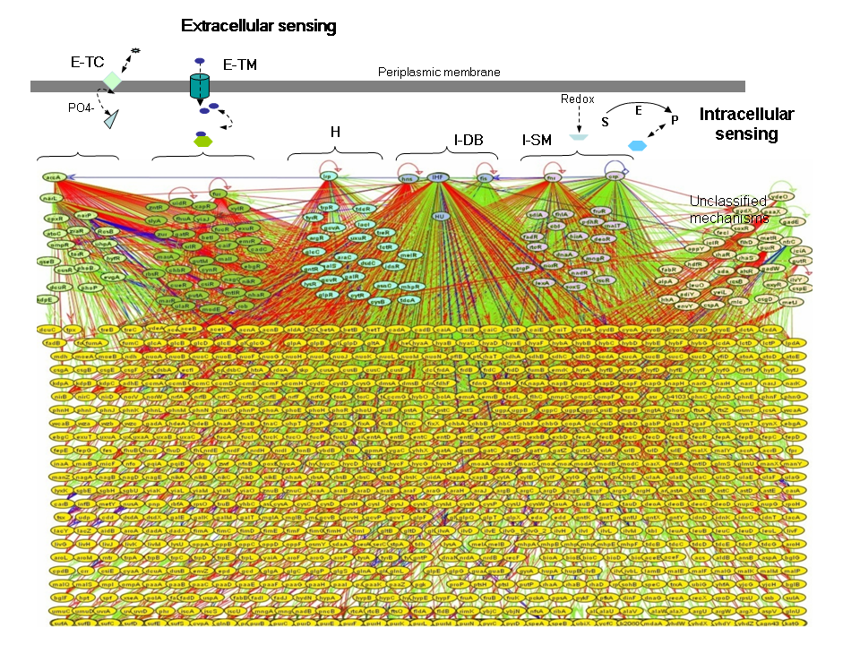
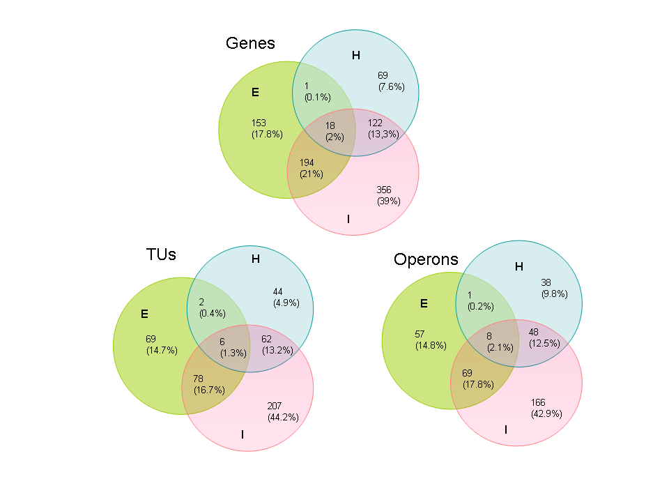

|
Internal sensing machinery directs the activity of
the regulatory network in Escherichia coli
Agustino Martinez-Antonio, Sarath Chandra Janga, Heladia Salgado &
Julio Collado-Vides
Summary
Individual cells need to have a constant monitoring of their environmental composition. They need to discern and synchronize
transcriptional responses in according to variations in external and internal
conditions. To achieve this level of coordination,
metabolites and chemical compounds are used by the cell as messages
to know the composition of these environments.
These signals act as control elements for the activity of transcription
factors (TF), which enable the cell to reciprocate with a
specific transcriptional response to environmental changes. Here we
outline how the E. coli TF repertoire is responding to
external or internal conditions based on the cellular location of the
signals affecting them; if the signal is outside the periplasm,
then the TF affected is sensing an external condition. On the other
hand, if the signal is produced or synthesized within the cell
(inside the membrane), then the TF affected is sensing an internal condition.
We classify 121 TFs according to their response
to external, internal or both conditions. We find that the global transcriptional
regulation is directed by the internal class of
sensing since: i) The internal class controls most of the regulons,
ii) TFs of external and hybrid classes are mostly regulated by
TFs from the internal class, iii) The internal class has the highest
frequency of co-regulation and iv) Most of the global
regulators belong to the internal class of sensing. This simple classification
of TFs will facilitate to study experimentally and
theoretically how the cell partitions its regulatory network to sense
different stimuli while coordinating its regulatory response
to extracellular and intracellular changes.
Supplementary data accompanying the paper
-
-
Tables showing the classification of the regulatory
network of E.coli into different systems of sensing(classes and
sub-classes) as described in this paper.
-
Supplementary Figure 2 showing the Escherichia
coli transcriptional regulatory network for sensing the environment.
-
Supplementary Figure 3 showing the overlap between
the regulated genes,TUs and Operons among the different classes of sensing-Internal,External
and Hybrid
-
Supplementary Figure 4 showing the use of signal
metabolites by TFs. One signal one TF (A), One signal interacting with
more than one TF (B) and one TF responding to more than one signal (C). Analysis
of transcription factors by the Number of signals is also discussed.
1. Definitions used in the manuscript describing the classification
of sensing systems are shown below in the supplementary figure 1. For detailed
description of the classes, please look to figure 1 and the text accompanying
the paper.
|
BOX 1. Definitions used
TF (Transcription Factor).
Transcription factor has been considered for a long
time, as "two-head" molecule (as Francois Jacob called it); one head
is the DNA-binding site domain and the other the allosteric site to
which a metabolite or environmental signal binds not-covalently. A TF
might be differentiated as comprised of two-components where the sensor
module is part of a different protein (as in two-component systems) or
by one-component where the sensor and the regulatory domain
(DNA-binding) are in the same protein.
TF gene.
Gene that encodes for a DNA-binding transcription factor protein.
Effector gene.
A gene whose product makes the effector signal
available: It could be a membrane sensor of a two-component system, a
sensing/binding/transporter or an enzyme that synthesizes the
corresponding effector metabolite.
Transcriptional sensing system.
A transcriptional sensing system combines the
transcriptional regulation of genes in according to the availability of
environmental stimuli or physiological cellular state (exogenous and
endogenous conditions). In addition to TF, a transcriptional sensing
system is constituted by an effector gene and a corresponding metabolic
or environmental signal. The effector gene may or may not be directly
regulated by their corresponding TF (forming a regulatory circuit in
the former case).
TF classes and sub-classes for transcriptional sensing systems depending on the cellular location of the effector signals directly sensed.
I. For sensing exogenous or environmental stimuli
Sub-classes:
E-TC.
Include TFs forming part of two-component systems, the signals are
sensed by the sensor component (most of them located in the bacterial
periplasm).
E-TM. Include TFs sensing
transportable metabolites; these TFs work in close connection with
transport systems that sense/introduce specific metabolites from the
milieu. The metabolites bound/sensed by this kind of TF are not anymore
modified by the cell metabolism except those modifications inherent to
the transport events (e.g. phosphorylation).
II. For sensing endogenous or intracellular stimuli
Sub-classes:
I-SM.
Include TFs binding/sensing metabolites generated by the cellular
metabolism; by enzymatic reactions (sugar, nucleotides, cofactors, etc)
or generated as byproducts of biochemical reactions (e.g. redox
potential).
I-DB. Include DNA-bending TFs
for nucleoid or chromosome remodeling and compaction, the activity of
this kind of TF is not directly affected by signal effectors but
possibly by DNA supercoiling or macromolecular crowding.
III. Hybrid systems for sensing metabolites from both endogenous and exogenous origin
H. Includes
hybrid TFs, thus named because both bind/sense metabolites produced by
the cell and transported from the milieu (mostly for sensing amino
acids that in addition to be synthesized by the cell can be transported
into the cell from the milieu).
|
2. The classification of the regulatory network of E.coli in
different systems of sensing as described in this paper
In these Tables, we show the systems involving TFs for sensing environment
signals in Escherichia coli K-12. The file is divided into three
parts(to obtain the file in flat file format click here);
in the first part are those TFs sensing extracellular signals; E-TC and
E-TM. In the second are those TFs for hybrid systems (H) whose signals
are both,transported and synthesized by the cell. In the third part are
those systems for sensing endogenous signals (I-SM) and those for DNA-bending
(I-DB). Data obtained from RegulonDB3 , TransportDB4 and EcoCyC5 databases(References at the bottom).
* External sensing
A) External-Two-component systems (E-TC), (29 TFs)
| TF (response regulator) |
Signal gene (response sensor) |
Functional Class* |
Putative function |
Putative signal |
| ArcA |
ArcB |
Global regulatory functions: Global regulatory
functions |
Sensor of aerobic and anaerobic growth conditions |
Membrane quinones (reduced oxygen) |
| AtoC |
AtoS |
Degradation of small molecules: Fatty acids |
Regulation of genes involved in acetoacetate
metabolism |
Acetoacetate? |
| BaeR |
BaeS |
Global regulatory functions: Global regulatory
functions |
Regulation of genes for an efflux pump increasing
resistance to some antibiotics, drag resistance |
unknown |
| BasR |
BasS |
Macromolecule synthesis, modification: RNA synthesis,
modification, DNA transcription |
Iron (Fe) response |
Fe+++? |
| CitB |
CitA |
Some information, but not classifiable: Not
classified (included putative assignments) |
Regulation of citrate assimilation |
Citrate? |
| CpxR |
CpxA |
Global regulatory functions: Global regulatory
functions |
Cell envelope stress response, biofilm, motility,
and chemotaxis. |
Changes in cell envelope structure |
| CreB |
CreC |
Global regulatory functions: Global regulatory
functions |
Catabolic regulation |
Growth on certain carbon sources such as glucose |
| CusR |
CusS |
Some information, but not classifiable: Not
classified (included putative assignments) |
Copper ion efflux system |
Copper? |
| DcuR |
DcuS |
Energy metabolism, carbon: Anaerobic respiration |
Activation of the fumarate-succinate antiporter
genes, in anaerobic conditions. |
Fumarate-Succinate? |
| DpiA |
DipB |
Some information, but not classifiable: Not
classified (included putative assignments) |
System for citrate utilization |
Citrate? |
| EvgA |
EvgS |
Some information, but not classifiable: Not
classified (included putative assignments) |
Confers multi-drug resistance, drag resistance. |
Unknown |
| KdpE |
KdpD |
Global regulatory functions: Global regulatory
functions |
Regulation of the high-affinity potassium transport
system, and the low cell turgor pressure. |
Turgor pressure |
| NarL |
NarX |
Energy metabolism, carbon: Anaerobic respiration |
Anaerobic respiration and fermentation in response
to the electron acceptor nitrate. (Nitrogen metabolism) |
Nitrate or nitrite |
| NarP |
NarQ |
Energy metabolism, carbon: Anaerobic respiration |
Anaerobic respiration and fermentation in response
to the electron acceptor nitrite and nitrate. (Nitrogen metabolism) |
Nitrate or nitrite |
| OmpR |
EnvZ |
Global regulatory functions: Global regulatory
functions |
Response in the osmotic pressure. |
External osmolarity |
| PhoB |
PhoR |
Global regulatory functions: Global regulatory
functions |
Regulate phosphate assimilation |
External inorganic phosphate |
| PhoP |
PhoQ |
Global regulatory functions: Global regulatory
functions |
Regulation of phosphate regulon, by the synthesis
of an acid phosphatase |
Mg++ and low concentrations of extracellular
divalent cations. |
| QseB |
QseC |
Some information, but not classifiable: Not
classified (included putative assignments) |
Quorum sensing system and transcriptional regulation
of FlhDC |
Furanones? |
| RcsB |
RcsC |
Cell envelop: Surface polysaccharides and antigens |
Expression of the capsular polysaccharide synthesis,
and ftsZ expression. |
Possibly osmotic upshift |
| RstA |
RstB |
Global regulatory functions: Global regulatory
functions |
Over-expression confers multi-drug resistance |
Unknown |
| TorR |
TorS |
Energy metabolism, carbon: Anaerobic respiration |
trimethylamine metabolism |
Trimethylamine N-oxide (TMAO) |
| UhpA |
UhpB |
Transport/binding proteins: MFS family
|
Controls the synthesis of the hexose phosphate
uptake |
External concentrations of glucose-6-phosphate
or 2-deoxyglucose-6-phosphate |
| UvrY |
BarA |
Global regulatory functions: Global regulatory
functions |
The regulated genes are not well-identified,
oxidative stress resistance |
Probably associated to hydrogen peroxide-mediated
stress.? |
| YedW/ |
YedV |
Some information, but not classifiable: Not
classified (included putative assignments) |
Overproduction causes a drug resistance phenotype |
unknown |
| YehT |
YehU |
Some information, but not classifiable: Not
classified (included putative assignments) |
Potassium transport |
Potassium? |
| YfhK |
YfhA |
Unknown proteins, no known homologs: Unknown
function |
Potassium transport |
Potassium? |
| YgiX |
YgiY |
Some information, but not classifiable: Not
classified (included putative assignments) |
This system could be similar to NarLX. Nitrogen
metabolism. |
unknown |
| YpdB |
YpdA |
Some information, but not classifiable: Not
classified (included putative assignments) |
Unknown |
unknown |
| ZraR |
ZraS |
Energy metabolism, carbon: Fermentation
|
This system probably senses high periplasmic
Zn2+ and Pb2+ concentrations. |
Zn2+ or Pb2+ ? |
| ?/RssB |
Sensor codified alone in one TU together with
3 other genes |
Macromolecule degradation: Degradation of proteins,
peptides, glycoproteins |
Regulates the stability of the sigmaS |
Unknown |
B). External sensing using transported metabolites ( E-TM ), (28 TFs)
| TF |
Signal transporters of metabolites |
Signal metabolite |
| AgaR |
agaWDVBC |
GalNAc or GalN |
| AllR (ybbU) |
YbbW |
Allantoin |
| ArsR |
ArsAB |
As, Cd(II) |
| AscG |
AscF |
Arbutin, salicin, and cellobiose (glucosides) |
| BetI |
BetT |
Choline |
| BglJ |
BglF, AscF, BglH |
�-glucosides (arbutin 6P, salicin) |
| CaiF |
CaiT, YeaV |
Carnitine |
| CelD |
CelABC |
Arbutin, salicin, and cellobiose |
| CueR |
YbaT |
Cu++ |
| CynR |
CynX, YeaN |
Cyanate |
| ExuR |
ExuT |
Hexuronate |
| FecR |
FecABCDE |
Ferric citrate/dicitrate |
| FucR |
FucP, BglH |
Fucose |
| Fur |
FhuACDB, fecBCDE |
Fe, Mn |
| GatR |
GatABC |
Galactitol 1P |
| GutM |
SrlAB (gutAB) |
Glucitol/sorbitol |
| GutR (SrlR) |
SrlAB (gutAB) |
Glucitol/sorbitol |
| ModE |
ModABC |
Molybdate |
| MtlR |
MtlA, CmtAB |
Mannitol |
| NanR (yhcK) |
NanT |
Sialic acid |
| NhaR |
NhaAB, YgcE, ChaA |
Na, pH |
| PhnF |
PhnECD |
Alkyl-phosphonate |
| RhaR |
RhaT |
Rhamnose |
| RhaS |
RhaT |
Rhamnose |
| UidR |
UidB |
Glucuronides |
| XapR |
XapB |
Xanthosine |
| XylR |
XylEFGH |
Xylose |
| ZntR |
ZnuABC |
Zn(II) |
* Hybrid systems (H). Sensing external and internal signals
(33 TFs)
| TFs |
Signal transporters genes |
Signal enzymatic genes |
Signal metabolites (synthesized and transported) |
| AllS* (ybbS) |
MenD (YjcG SSS transporter |
GlcB , AceB (malate synthase); GhrAB (glyoxylate
reductase); AceA (isocitrate lyase). AllA (ureidoglycolate
hydrolase). Glycolate dehydrogenase. Eda (malate synthase). ). IlvB (2-hydroxyglutarate
synthase)
|
Glyoxylate |
| Arac |
AraEFGH, YdeA, YjjK |
AraA (L-arabinose isomerase) |
Arabinose |
| ArgR |
AniC, HisQPMT, ArtIJMQP. |
ArgH ( argininosuccinate lyase) |
Arginine |
| AsnC |
AnsP (APC transporter) |
asnB (asparagine synthase B); asnA (aspartate--ammonia-ligase). |
Asparagine |
| CysB |
Sbp, CysAUWPT; |
pspE , glpE ( thiosulfate sulfurtransferase) |
Thiosulfate |
| CytR |
NupCG. |
udk ( cytidine kinase); cdd (cytidine
deaminase) |
Cytidine |
| DsdC |
CycA, SdaC, TdcC |
SerB (phosphoserine phosphatase); CysE , CysK (cysteine synthase): EntF (serine activating enzyme); YdfG (3-hydroxy
acid dehydrogenase) |
Serine |
| GalR* |
MglABC, galP, bglH |
lacZ ( beta-galactosidase); galM (aldose-1-epimerase) |
Galactose |
| GalS |
MglABC, galP, bglH |
lacZ ( beta-galactosidase); galM (aldose-1-epimerase) |
Galactose |
| GcvA |
cycA (serine/alanine/glycine APC transporter) |
glyA (glycine hydroxymethyltransferase)
formylTHF biosynthesis; kbl (2-amino-3-ketobutyrate CoA ligase). GcvP (glycine
dehydrogenase). ItaC L-allo-threonine aldolase. |
Glycine |
| GcvR |
cycA (serine/alanine/glycine APC transporter) |
glyA (glycine hydroxymethyltransferase)
formylTHF biosynthesis; kbl (2-amino-3-ketobutyrate CoA ligase). GcvP (glycine
dehydrogenase). ItaC L-allo-threonine aldolase. |
Glycine |
| GlcC |
GlcA |
AldA (aldehyde
dehydrogenase) . GhrAB (glyoxylate reductase A and B). Gph (phosphoglycolate
phosphatase) |
Glycolate |
| GlpR |
GlpT, UgpABEC; |
glpK (glycerol kinase), ugpQ (glycerophosphoryl
diester phosphodiesterase, cytoplasmic), GpsA (glycerol-3-phosphate dehydrogenase) |
Glycerol-3P |
| GntR |
GntPTU, IdnT |
idnO (5-keto-D-gluconate 5-reductase). GhrB (2-ketoaldonate
reductase). |
Gluconate |
| IdnR |
IndT. |
GhrB (2-ketoaldonate reductase) |
L-idonate or 5-ketogluconate |
| LctR |
LctP, GlcA. |
AldAB (aldehyde dehydrogenase A and B) |
Lactate |
| Lrp |
LivKMHGFJ, BrnQ. |
TyrB (aromatic amino acid transaminase); IlvE (branched
chain amino acid aminotransferase) |
Alanine, Leucine |
| LysR |
ArgT, HisQMP, LysP, CadB. |
FrlB (fructoselysine 6-phosphate deglycase). LysA (diaminopimelate
decarboxylase) |
Lysine |
| MelR |
MelB. |
MelA (a-galactosidase); |
Melibiose |
| MhpR |
MhpT, HcaT. |
HcaEFCD (3-phenylpropionate dioxygenase
system) |
3-phenylpropionate |
| TdcA |
TdcC |
ThrC (threonine synthase) |
Threonine |
| TdcR |
TdcC. |
ThrC (threonine synthase) |
Threonine |
| TetR |
|
|
Tetracycline-Mg2+ |
| TreR |
TreB, crr. |
TreE , OstB (trehalose phosphatase) |
Trehalose |
| TrpR |
Mtr, TnaB, aroP |
TrpAB tryptophan synthase, protein A
and B. SolA N-methyltryptophan oxidase |
Tryptophan |
| TyrR |
PheP, AroP, TyrP |
TyrB ( aromatic-amino-acid transaminase) |
Tyrosine, phenylalanine, tryptophan |
| FhlA |
FolAB |
FolE ( GTP cyclohydrolase I) folate biosynthesis; purU (formyltetrahydrofolate
deformylase) formylTHF biosynthesis; pflB (pyruvate formate-lyase), tdcE (pyruvate formate-lyase 4); ribA (GTP cyclohydrolase
II); ribB (3,4-dihydroxy-2-butanone 4-phosphate synthase). Def (peptide deformylase). YfdW (formyl-CoA transferase). |
Formate |
| RbsR |
RbsABCD,YjcXVW |
RihABC ( ribonucleoside hydrolase 123) |
Ribose |
| RpiR (AlsR) |
RbsABC, AlsABC |
RihABC (ribonuceloside hydrolases 1, 2 and 3) |
Ribose |
| NagC |
NagE, ManXYZ |
NanE (N-acetylmannosamine-6-P epimerase) |
GlcNac-6P |
| CadC |
CadB |
CadA (lysine decarboxylase), ldcC (lysine
decarboxylase 2) |
Cadaverine |
| SdiA |
RhtB |
2-dehydropantoyl-lactone reductase (B-specific) |
Furanones |
| PutA |
ProPY, PutP, ProVXW, YjcG |
ProC (pyrroline-5-carboxylate-reductase) |
Proline |
* TFs for internal sensing
* Using internal synthesized signals (I-SM), (26 TFs)
| TFs |
Enzymes (in black) |
Product of |
Signal metabolite (synthesized) |
| BirA |
BioD (dethiobitin synthase); BioB (biotin
synthase) |
From fatty acid biosynthesis and biotin biosynthesis
I. |
Biotin 5P |
| Cbl |
CysH (3'-phospho-adenylylsulfate reductase) |
From sulfate assimilation pathway |
Adenosine 5PS |
| CRP |
CyaA (adenylate cyclase) |
From ATP |
cAMP |
| DeoR |
DeoABD ( deoxyribose-phosphate aldolase) |
From ribose phosphate degradation |
Deoxyribose 5P |
| DnaA |
PykF, PykK (pyruvate kinase I and II
) glycolisis; AtpB , AtpF , AtpE , AtpD , AtpG , AtpA , AtpH , AtpC (ATP synthase); SucD (succinate
dehydrogenase) krebs cycle; TdcD , AckA (proponate kinase
I and II) threonine degradation. |
From phosphoenolpyruvate, succinyl-CoA, ropionyl-P
and ADP. From multiple pathways |
ATP |
| FadR |
FadABIJ (fatty acid oxidation complex); FadK (acyl-CoA
synthetase), FadD (fatty acyl-CoA synthetase). Fatty acid oxidation
complex. |
From fatty acid degradation pathway |
Acyl CoA |
| FarR |
FadABIJ (fatty acid oxidation complex); FadK (acyl-CoA
synthetase), FadD (fatty acyl-CoA synthetase). Fatty acid oxidation
complex. |
From fatty acid degradation pathway |
Acyl CoA |
| FruR |
pfkA (6-phosphofructokinase-1); pfkB (6-phosphofructokinase-2); fruK (1-phosphofructokinase). |
From glycolysis, and mannitol and sorbitol degradation. |
Fructose 1,6BP,
|
| IciA |
PykF, PykK (pyruvate kinase I and II
) glycolisis; AtpB , AtpF , AtpE , AtpD , AtpG , AtpA , AtpH , AtpC (ATP synthase); SucD (succinate
dehydrogenase) krebs cycle; TdcD , AckA (proponate kinase
I and II) threonine degradation. |
From phosphoenolpyruvate, succinyl-CoA, ropionyl-P
and ADP. From multiple pathways. |
ATP |
| IclR |
Pps (phosphoenolpyruvate synthase), Pck (phosphoenlopyruvate
corboxykinase), Eno (enolase), Ppc (phosphoenolpyruvate carboxylase) |
From gluconeogenesis, glycolysis, mixed acid
fermentation and anaerobic respiration. |
Phosphoenolpyruvate |
| IlvY |
IlvC (acetohydroxy acid isomeroreductase); IlvBIGHNM
(acetohydroxybutanoate synthase) -convergent. |
From isoleucine biosynthesis |
a-Acetohydroxybutyrate |
| LacI |
LacYZ (b-galactosidase, isomerase). |
From lactose |
Allolactose |
| LeuO |
Gpp (guanosine-5'-triphosphate,3'-diphosphate
pyrophosphatase); RelA , SpoT ( ppGpp synthetase I and II) |
From ppGpp biosynthesis |
ppGpp |
| MalT |
MalZ (Maltodextrin glucosidase); MalQ (amylomaltase) |
From glycogen degradation |
Maltotriose |
| MetJ |
MetK (s-Adenosylmethionine synthetase); |
From S-adenosylmethionine biosynthesis. |
s-Adenosylmethionine |
| MetR |
MetC (cystathionine-beta-lyase). MalY (cystathionine
b-liase). YagD (mmuM-homocysteine methyltransferase) |
From methionine bios�ntesis |
Homocysteine |
| PaaX |
PaaK (phenylacetate-CoA ligase). FeaB (phenylacetaldehyde
dehydrogenase) |
From phenylacetate degradation |
Phenylacetic-CoA |
| PdhR |
MhpE (4-hydroxy-2-ketovalerate aldolase); Dld (D-lactate
dehydrogenase); LldD (L-lactate dehydrogenase [cytochrome]); DadA (D-amino acid dehydrogenase); GarL (alpha-dehydro-beta-deoxy-D-glucarate
aldolase); EntB (isochorismatase); PabC (aminodeoxychorismate
lyase); DgoA (2-dehydro-3-deoxyphosphogalactonate aldolase); MaeB (malic
enzyme, NADP+-linked); MetC , TnaA (L-cysteine desulfhydrase); tdcG , SdaA, SdaB (L-serine deaminase 3); MenD (SHCHC synthase); PrpB (2-methylisocitrate lyase); nanA (N-acetylneuraminate
lyase); : trpE , trpD (anthranilate synthetase); UbiC (chorismate
pyruvate lyase). Eda (2-keto-3-deoxy-6-phosphogluconate aldolase). SfcA (malic enzyme). PykF , PykK (pyruvate kinase I and II). MetC (cystathionine-beta-lyase). MalY (cystathionine b-liase). UbiC (chorismate pyruvate lyase).
|
From �-D-glucuronide, propionate, alanine,
glucarate, galactonate, glyoxylate, serine and Tryptophan degradation.
From aerobic, anaerobic respiration and mixed acid fermentation. From biosynthesis
of ubiquinone, tryptophan, menaquinone, methionine, folate, enterobactin,
etc. In 26 pathways.
|
Pyruvate |
| PurR |
DeoD (inosine phosphorylase). Ade (cryptic
adenine deaminase). RihC (ribonucleoside hydrolase 3). Hpt (hypoxanthine
phosphoribosyltransferase) |
From salvage pathways of adenine, hypoxanthine,
and their nucleosides. |
Hypoxanthine |
| WbrA |
SsuD (alkanesulfonate monooxugenase); RibF (riboflavin
kinase) |
From riboflavin, FMN and FAD biosynthesis. In
two pathways. |
Flavin mononucleotide (FMN) |
| FNR |
|
|
Oxide-reduction |
| OxyR |
|
|
Oxide-reduction |
| SoxR |
|
Divergent to the TU codifying for SoxS |
Oxide-reduction |
| NtrC (glnG) |
NtrB (GlnD). Two components. |
Sense low concentrations of ammonia in the cytoplasm |
Glutamine levels |
| Ada |
|
Auto-methylation |
Methyl group |
| LexA |
|
Auto-activated |
DNA damage |
B) TFs for DNA-bending ( I-DB ), (4 TFs)
| FIS |
|
|
DNA-bending protein |
| IHF |
|
|
DNA-bending protein |
| HU |
|
|
DNA-bending protein |
| HNS |
|
|
DNA-bending protein |
3. Supplementary Figure 2 shows the Escherichia coli transcriptional
regulatory network for sensing the extracellular and intracellular environment.You
can also view this figure in pdf format
In the upper part and from left to right, in green, are those TFs corresponding
to the extracellular class of sensing; in light green, are those TFs from
two-component systems (E-TC) and in dark green, are those TFs using exogenous
metabolites transported into the cells by transport systems (E-TM). In
light blue are those TFs corresponding to hybrid system of sensing (H);
i.e those TFs using metabolites synthesized inside the cell and incorporated
from the milieu, resembling mechanism from E-TM and I-SM sub-classes. For
TFs for internal sensing; in dark blue are those TFs for DNA-bending or
chromatin architectural TFs, they do not sense metabolites directly. In
pink are those TFs for sensing intracellular conditions using endogenous
signals synthesized inside the cell or sensing the internal cellular redox-state.
Finally, in light orange are those TFs without metabolites or un known
mechanisms to modulate their activities. Global TFs6 (ArcA,
Lrp, Hns, IHF, FIS, FNR and CRP) are at the top level. The connections:
green lines represent activation; red, repression; blue, dual (activation
and repression). The loops in the TFs represent auto-regulation positive, negative
or dual represented as by the line codes. In yellow (low) are those genes
which do not code for TF products. Abbreviations: S, substrate; E, enzyme
and P, product.

4. Figure 3 shows the overlap between regulated genes,TUs and
Operons among the different classes of sensing-Internal,External and Hybrid.It
can be seen that in each case more than 75% of the machinery is regulated
by the internal sensing class. The numbers indicate the absolute number
of elements in each class being regulated by each class of TFs (in parenthesis
are the percentages of each class of elements). Abbreviations: I, internal
class of sensing; E, external class of sensing; H, hybrid systems as described
in Box 1.

5. Interaction of signal
metabolites with Transcription Factors
We analyzed the TFs by the number of signal effectors in order to know
the flexibility of the transcriptional machinery to adapt to environmental
changes. Currently, there are 139 known TFs regulating 1058 genes with
some experimental evidence in E. coli. of the Total of TFs, 120 (86%) could
be classified into one of the three classes of sensing proposed in the
paper and presented in the tables before. Of the classifiable TFs, in 77
TFs there is a one-to-one relation between TF and the metabolite (Figure
4a). When a TF responds to metabolite (13 TFs), these metabolites
have structural similarity and the TF has a different transcriptional response
depending on the metabolite used (Figure 4b). For instance, TyrR can interact
with three aromatic amino acids and ATP, and it is able to acquire more than
one homomultimeric conformation; it can bind to strong sites by itself, or
with tyrosine bound, binds to weak sites for repression, while phenylalanine
and tryptophan are used mostly to activate transcription by binding only
to strong sites in the DNA7. On the other hand, some metabolites
regulate the activity of more than one TF (15 TFs, Figure 4c). In such
cases there could be a differential binding to the TFs depending on the
availability of the metabolite; as is known for galactose, where GalS is
active in high concentrations of galactose and GalR (higher affinity) is
active when the availability of galactose is low in the milieu8.

Other 5 TFs do not respond precisely to one metabolite,
such as FNR, SoxR, OxyR (modifying their conformation depending on the
redox potential in the cell) and Ada and LexA (sensing the damage on DNA
strands). There are 4 TFs; IHF, FIS, HU and HNS which do not respond
directly to signal effectors (but through their regulation by TFs, those responding
to signals). Finally, of 7 TFs forming part of two component systems (external
class) we do not have knowledge about their sensed signals.
References
1. Wall, M.E. , et al. (2004) Design of gene circuits: lessons from
bacteria. Nat Rev Genet 5, 34-42
2. Ulrich, L.E. , et al. (2005) One-component systems dominate signal
transduction in prokaryotes. Trends Microbiol 13, 52-56
3. Salgado, H. , et al. (2004) RegulonDB (version 4.0): transcriptional
regulation, operon organization and growth conditions in Escherichia coli
K-12. Nucleic Acids Res 32 Database issue, D303-306
4. Ren, Q. , et al. (2004) TransportDB: a relational database of
cellular membrane transport systems. Nucleic Acids Res 32 Database
issue, D284-288
5. Keseler, I.M. , et al. (2005) EcoCyc: a comprehensive database
resource for Escherichia coli. Nucleic Acids Res 33 Database Issue,
D334-337
6. Martinez-Antonio, A., and Collado-Vides, J. (2003) Identifying global
regulators in transcriptional regulatory networks in bacteria. Curr
Opin Microbiol 6, 482-489
7. Pittard, J. , et al. (2005) The TyrR regulon. Mol Microbiol 55,
16-26
8. Geanacopoulos, M., and Adhya, S. (1997) Functional characterization
of roles of GalR and GalS as regulators of the gal regulon. J Bacteriol 179,
228-234
For Questions/Comments/Data requests, please mail: agustino@ccg.unam.mx /sarath@ccg.unam.mx / collado@ccg.unam.mx
|